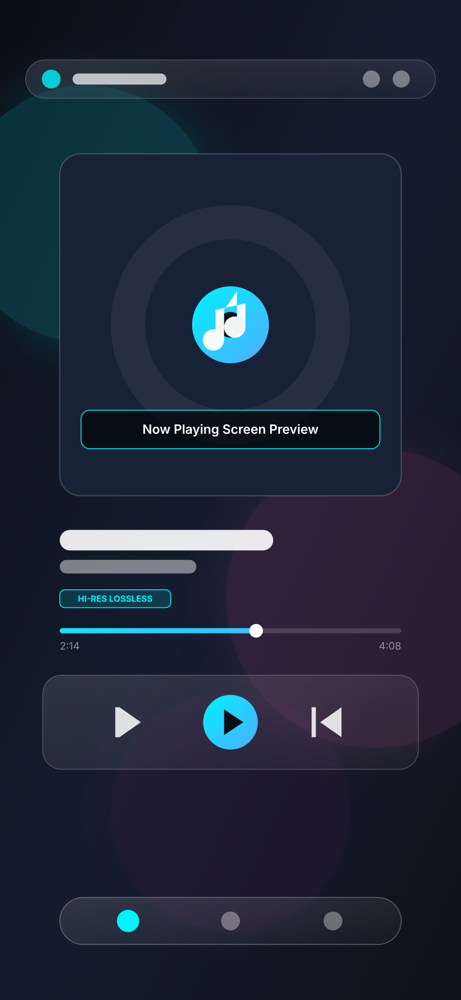
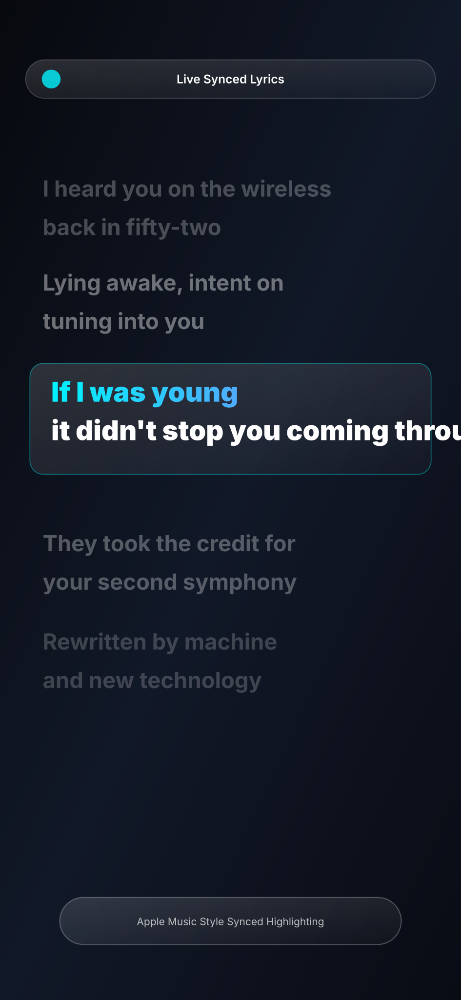
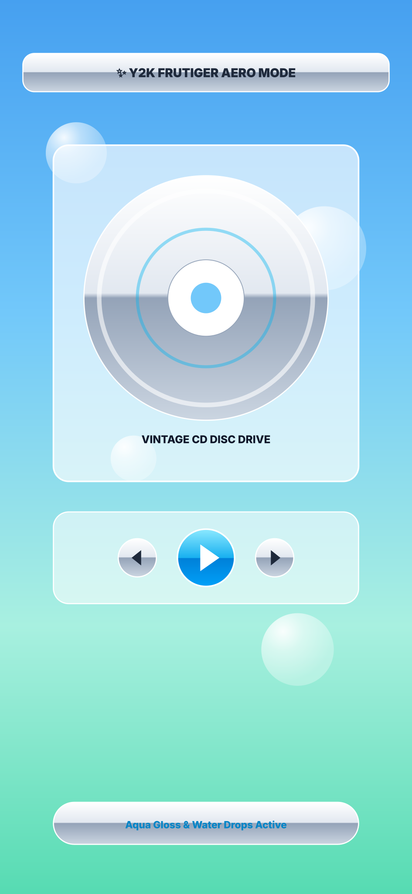
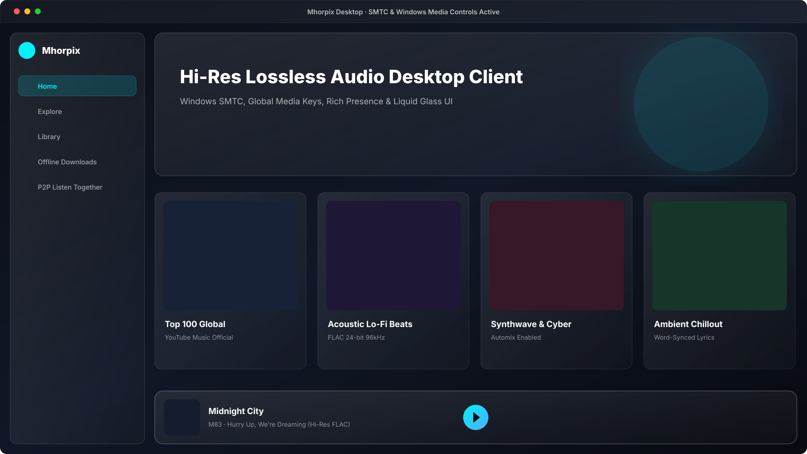

Music, Elevated to
Pure Liquid Art.
An aesthetic YouTube Music client engineered with frosted liquid glass, 24-bit Hi-Res lossless audio, synced Apple-style lyrics, gapless playback, and decentralized peer-to-peer listening.

Designed for Audiophiles.
Styled for Royalty.
Every screen and waveform has been meticulously crafted to deliver unprecedented fidelity, breathtaking liquid refraction, and complete personalization.
Hi-Res Lossless Audio
Studio-master FLAC and ALAC streams with YouTube Music as fallback. Experience clean 24-bit 96kHz/192kHz audio without compression artifacts or dynamic throttling.
Apple-Style Synced Lyrics
Word and syllable-accurate vocal highlighting powered by multi-source lyrics providers. Smooth kinetic animations track every beat in real time.
Frosted Liquid Glass
Translucent Haze glass bars with specular refraction and artwork-driven dynamic theming. Seamlessly adapts to dominant album colors on the fly.
Y2K Nostalgic Theme
One-touch transformation into early-2000s Frutiger Aero nostalgia. Features silver chrome gradients, glossy Aqua buttons, and animated water droplets.
Peer-to-Peer Listening
Jam with nearby friends over local Wi-Fi or Hotspot with zero cloud latency. Instant QR-code scanner pairing, collaborative queueing, and live chat.
Gapless & DJ Automix
Adjustable 0–12 second true crossfade, skip silence, and beta DJ-style transitions with real-time beat matching and tempo stretching.
A Look Inside Mhorpix
Explore the clean, distraction-free interface across mobile and desktop.
(Placeholders are ready in website/assets/screenshots/ for your high-res screenshots)



Experience Liquid Glass Live
Move your cursor or touch the glass tile to watch specular highlights, refraction, and chromatic aberration react dynamically in real time.
Latest GitHub Release
Direct downloads synchronized with the official GitHub repository. When a new release is published, this card updates automatically.
Fetching Latest Release from GitHub...
Checking ShadowByte01/Mhorpix-Music releases